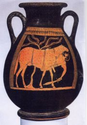

Homér (9./8. stol. př.n.l.)

Tradice říká, že Homér byl slepý básník (Řekové věřili, že slepci mají věštecké schopnosti). Více toho o něm nevíme, a proto o jeho existenci panují vážné pochybnosti. Jsou mu připisována dvě největší díla řecké literatury – eposy Ilias a Odyssea.
Hesiodos (8./7. stol. př.n.l.)
Hesiodos zpracoval v básni Zrození bohů (Theogonia) řeckou mytologii a ve skladbě Práce a dni vlastní zkušenosti s prací rolníka.
|
ŘECKO
Starověké Řecko je kolébkou evropské civilizace.
Řeckým umělcům, vědcům i politikům vděčíme za mnohé. Okřídlené rčení „Již staří Řekové…" není příliš daleko od pravdy. V řeckých městských státech (polis) se zrodila demokracie a s ní i politika. Svobodní občané v Athénách se podíleli na správě státu a sami si vládli.
Základem řecké kultury byla bohatá mytologie.
Bohové se chovali stejně jako lidé, na rozdíl od nich ale měli nadpřirozenou moc a často zasahovali do lidských osudů. Ze spojení bohů a lidí se zvířaty se rodily podivné bytosti (Minotauros, Kentauři…), polobožští hrdinové (heroové) jako Herakles nebo Perseus se proslavili díky pomoci svých rodičů. Mytologické náměty zpracovává výtvarné umění i literatura.
V řeckém umění došlo k významnému posunu v otázce autorství. Začala být ceněna nejen kvalitní umělecká díla, ale také jejich autoři. Díky tomu známe řecké sochaře, malíře i spisovatele.
V Řecku se zrodilo drama. Vzniklo třídění na literární žánry (lyrika, epika) a druhy (poezie, próza), které používáme dodnes. Také řada odborných termínů z literární teorie a dalších vědních oborů má řecký původ. Vždyť se tu zrodila filozofie i hlavní vědecké disciplíny!
Sestav rodokmen řeckých bohů (nejstarší jsou Uranos a Gaia).
Co o nich víš?
Které napůl lidské a napůl zvířecí bytosti znáš?
Převyprávěj osudy řeckých hrdinů.
Které bájné postavy z řecké mytologie daly název souhvězdím?
|
Historie
Nejstarší civilizací na území Řecka byla krétsko-mykénská kultura (3. tis. až 12. stol. př.n.l.). V 11. stol. př.n.l. osídlují jižní Řecko Dórové. V archaickém období (8. až 6. stol. př.n.l.) vznikají první městské státy (polis), začíná kolonizace Středozemního a Černého moře a v roce 776 př.n.l. se konají první olympijské hry. Klasické období (500-338 př.n.l.) bylo ve znamení rozkvětu řeckých měst, athénské demokracie i bojů. V řecko-perských válkách (490-449 př.n.l.) zvítězili Řekové, v peloponéské válce (431-404 př.n.l.) porazila Sparta Athény a v bitvě u Chairóneie porazil Řeky makedonský král Filip II. Po smrti jeho syna Alexandra Makedonského (336-323 př.n.l.) nastává období helénismu. Roku 146 př.n.l. získali Řecko Římané, kteří z něj vytvořili svou provincii Achaia (27 n.l.). V roce 395 ho zpustošili Vizigóti a Řecko se stává součástí východořímské říše, pozdější Byzanc (395-1453). Následuje turecká nadvláda. V roce 1822 vyhlásilo Řecko nezávislost.
|
Epika
Základem epické poezie je vypravování příběhů (řecké slovo epikos znamená výpravný, dějový). Nejstaršími literárními památkami v Řecku byly hrdinské (Homér) a didaktické (Hesiodos) eposy. Epické básně přednášeli za doprovodu lyry potulní recitátoři – rapsodi.

Achilles měl pouze jedno zranitelné místo – patu.
|
Homér: Ilias
Epos Ilias vychází z mýtů o trojské válce, která trvala 10 let. Na začátku všech problémů byl syn trojského krále Priama Paris, který označil za nejkrásnější bohyni Afroditu. Za odměnu získal krásnou Helenu, manželku krále Menelaa. Její únos do Troje (řecky Ilion) nezůstal bez odplaty. Řečtí hrdinové (Achilles, Odysseus, Nestor...) pod vedením Menelaova bratra Agamemnona město oblehli, ale Trojané jejich náporu dlouho vzdorovali. Do konfliktu zasahovali i bohové. Řekům pomáhala Athéna, Héra, Poseidon a Hefaistos, Trojanům Afrodita, Apollon a Ares.
Samotný epos ale nelíčí děj takto lineárně. Homér si vybírá 51 dní posledního roku trojské války a předchozí události vypravuje formou retrospektivy. Agamemnon připraví Achilla o válečnou kořist – krásnou zajatkyni Briseovnu. Rozhněvaný Achilles přestane bojovat a Řekové obléhající Troju začínají prohrávat. Achilles změní svůj postoj, když zjistí, že jeho přítele Patrokla, který si oblékl Achillovu zbroj, zabil nejudatnější trojský bojovník Hektor. Achilles Hektora zabije a jeho mrtvolu vláčí za svým vozem. Pohřbem Hektora celý epos končí.
Ilias je psána daktylským hexametrem, více než 15 000 veršů bylo rozděleno do 24 zpěvů.
Co víš o jmenovaných hrdinech a bozích?
|
Heinrich Schliemann
(1822-1890)

Německý archeolog Schliemann [šlí-] byl přesvědčen, že homérské eposy mají reálný základ, a skutečně bájnou Troju objevil (dnešní Izmir v Turecku). Mezi jeho nejvýznamnější nálezy patří tzv. Agamemnonova zlatá maska.

Agamemnonova maska
|
Odyssea

Mapa zachycuje Odysseovo desetileté bloudění po Středomoří. V jeho stopách se vydal americký cestovatel Richard Halliburton [helibértn] (1900-1939), který své zážitky shrnul v knize Nádherné dobrodružství.
Posádka Odysseovy lodi musela odolat nádhernému zpěvu Sirén.
|
Homér: Odyssea
Také Odysseovy osudy jsou převyprávěny formou retrospektivy. Vlastní děj zachycuje pouze posledních 41 dní. Odysseův syn Telemachos se rozhodne najít otce, který se ani po 10 letech nevrací z vítězné trojské války. Dozvídá se, že ho vězní nymfa Kalypso, ale mezitím už Odysseus připlouvá k ostrovu Fajáků. Při hostině jim vypráví svoje osudy po dobytí Troje: střetnutí s Kikony, pobyt v zemi Lotofagů, potyčku s Kyklopem (synem boha moří Poseidona), pomoc vládce větrů Aiola, setkání s lidožravými Laistrygony a kouzelnicí Kirké, sestup do podsvětí, překonání nástrah Sirén, Skylly a Charybdy. Fajákové dopraví Odyssea na Ithaku, kam se vrací i Telemachos. Odysseus, kterého Athéna promění v žebráka, vnikne do svého domu plného nápadníků, všechny je pobije a po 20 letech odloučení se konečně setkává s manželkou Penelopou.
Odyssea je psána daktylským hexametrem, více než 12 000 veršů bylo rozděleno do 24 zpěvů.
Převyprávěj Odysseovy osudy podrobněji.
|
Odysseus

Odysseovi muži oslepili Kyklopa Polyfema, aby se dostali z jeho spárů. Za to Kyklopův otec Poseidon Odyssea vytrestal – musel putovat 10 let, než se dostal domů na Ithaku.

|
Ezopovi (Aisopovi) jsou připisovány řecké bajky, které sepsal ve 3. stol. př.n.l. Demetrios Falerský. Známe je díky latinskému (Phaedrus) a řeckému (Babrios) přebásnění z 1. stol. n.l.
Bajky
Bajky jsou krátká podobenství s mravním ponaučením. Většinou v nich vystupují zvířata, která se chovají jako lidé, ale bajkou může být i příběh o stromech, věcech nebo lidech.
|
Život Aisopův
Antická próza Život Aisopův popisuje, jak se původně němý, chromý a ošklivý otrok Ezop stal majetkem filozofa Xantha a jak dosáhl svou chytrostí propuštění na svobodu. Na konci života byl Ezop křivě obviněn a svržen do propasti.
|
Otroctví
Řecká demokracie byla založena na práci otroků, kteří neměli žádná práva a byli majetkem svobodných občanů. Do otroctví upadali váleční zajatci nebo dlužníci. Otrokem se tedy mohl stát i svobodný občan. Lidé mohli být z otroctví vykoupeni nebo propuštěni (propuštěnci). S výjimkou zemědělství nebyla fyzická práce důstojná svobodných občanů, a proto se jí vyhýbali.
Znáš nějakou bajku? Zkus ji převyprávět. Jaké z ní plyne poučení?
Vymysli novou bajku.
|
Lyrika
Lyrická poezie popisuje pocity. Nejstaršími lyrickými básníky byli Archilochos a Solon, později Alkaios, Sapfo a Anakreon. Sborové lyrice se věnoval Pindaros. K nejstarším lyrickým formám patří óda, hymnus, elegie a dithyramb. Lyrické básně se přednášely nebo zpívaly za doprovodu lyry či píšťaly. Za mytického vynálezce lyry je považován pěvec Orfeus. Múzou lyrické poezie byla Polymnia.

Řečtí pěvci se doprovázeli hrou na lyru.
|
Sapfo (627-568 př.n.l.)
Básnířka Sapfo žila se svými družkami na ostrově Lesbos, kde vedla básnickou školu. Napsala ódu na bohyni Afroditu, dochovaly se i zlomky její milostné poezie. Zvláště vynikají verše věnované milence Atthidě.
Anakreon (572-487 př.n.l.)
Anakreon psal verše opěvující boha Dionýsa, víno, ženy a zpěv. Jeho milostné a pijácké písně napodobovali mnozí další autoři (anakreontská poezie).
Anakreon: Lásku a písně
Není mi přítelem ten, kdo při plném poháru vína
líčí žalostné války, sváry a spory – však mám
v oblibě člověka toho, jenž dovede s radostnou myslí
vzpomenout na skvělé dary bohyně lásky a Múz.
|
|
Sapfo a Alkaios
|
Demosthenes
(384-322 př.n.l.)
Řečník Demosthenes byl prý velmi cílevědomý – oholil si půlku hlavy, aby nemohl vycházet ven a musel na sobě pracovat, také si vkládal do úst oblázky nebo se snažil překřičet mořský příboj. Proslavily ho především filipiky (útočné řeči proti makedonskému králi Filipovi II., který zaútočil na Řecko). Podle životopisce Plutarcha sice uměl zmobilizovat řecké občany, ale první utíkal z boje...
|
Věda
Svoje vědecká pojednání psali Řekové většinou prózou. Ve filozofii vynikl především Sokrates, který nám mimo jiné zanechal podobenství o bájné Atlantidě. Jeho spisy se bohužel nedochovaly, ale hlavní myšlenky zachytil další z filozofů – Platon. Z jeho pera se zachovalo velké množství dialogů. Je také autorem knihy Ústava, prvního pojednání o ideálním státním uspořádání, na které v renesanci navázala řada dalších myslitelů. Úctyhodné dílo po sobě zanechal filozof Aristoteles. Jeho spis Poetika je prvním pokusem o systematický rozbor umělecké literatury. Kromě filozofie pěstovali Řekové i další vědy. Z humanitních oborů to byla především historie, které se věnoval Herodotos, Thukydides a Xenofon. V době římské napsal dějepisec Plutarchos sérii životopisů, ve kterých porovnává dvojice vybraných Řeků a Římanů. Z tohoto srovnání vycházejí většinou lépe občané Říma. Řekové si velmi vážili vzdělání. Zakládali školy (Platonova Akademie), knihovny (Alexandrie) a múseiony – chrámy Múz, kde se pěstovalo umění i vědy.
Kolik bylo Múz? Co o nich víš?
|
Aristoteles (384-322 př.n.l.)

Aristoteles byl největším řeckým myslitelem. Vychovával vojevůdce Alexandra Makedonského a napsal řadu pojednání (Metafyzika, O duši, Rétorika, Poetika, Etika...).
|
Jazyk a písmo

Krétské hieroglyfy na disku z Faistu a lineární písmo A
|
Jazyk a písmo
Starověkou řečtinu tvořila tři hlavní nářečí – iónsko-atický, aiolský a dórský dialekt. Ve 3. stol. př.n.l. se stalo atické nářečí základem tzv. obecného jazyka koiné. Zatímco starověká řečtina ustrnula, z mluveného jazyka se vyvinula novořečtina.
Nejstarším dochovaným písmem v Řecku jsou hieroglyfy, které byly nalezeny na Krétě (disk z Faistu). Toto písmo nebylo dosud rozluštěno, stejně jako krétskomykénské lineární písmo A. Lineární písmo B se pokoušel rozluštit anglický archeolog Evans (objevitel krétské civilizace), ale dokázal to až Angličan Michael Ventris (1922-1956). Toto písmo zachycuje ranou podobu řečtiny ve 2. tis. př.n.l. (tzv. mykénština).
Řekové převzali od Féničanů 24 písmen hláskové abecedy. Na rozdíl od nich začali zapisovat i samohlásky. Nejstarší nápis tímto písmem pochází z 8. stol. př.n.l. Velká písmena se tesala do kamene, malými se psalo na papyrus, černé voskové tabulky nebo ostrakony (střepy). Každé písmeno mělo zároveň číselnou hodnotu. Názvy jednotlivých písmen řecké alfabety se používají hlavně ve fyzice.
Další autoři
Lukianos: Rozhovory bohů, O začarovaném oslu, Pravdivé příběhy
Apollonios Rhodský: Argonautika
|
Hlásková abeceda

Tabulka ukazuje vznik řeckého písma z hláskové abecedy Féničanů. I v dobách římské nadvlády si řečtina uchovala svůj vliv. Řada významných děl včetně Nového zákona byla psána řecky.
Ukázka řeckého textu
|
Internetové stránky
Kréta, Mykény, Řecko, umění
Homer
Havlíček: Achilleus a Odysseus, článek
Scenes from Homer’s Odyssey
Phaistos Disk, Faistos
Phaistos Disk, Faistos
Ancient Greek Cities, rekonstrukce, fotografie
Greek art and architekture, fotografie
Alexandrijská knihovna, informace
Nápis na střepu (ostrakon)
|
Doporučená četba
Bouzek, J., Ondřejová, I.: Periklovo Řecko, Praha 1989
Graves, Robert: Řecké mýty (2 svazky), Odeon, Praha 1982
Graves, R.: Zlaté rouno, Praha 1970
Halliburton, Richard: Nádherné dobrodružství
Hérodotos: Dějiny, přel. J.Šonka
Homér: Ílias, přel. R.Mertlík, Odeon, Praha 1980
Homér: Odyssea, přel. O.Vaňorný, Odeon, Praha 1967
Homér: Odysseova dobrodružství, přel. R.Mertlík, Československý spisovatel, Praha 1968
Hošek, Radislav: Náboženství antického Řecka, Vyšehrad, Praha 2003
Kerényi, Karl: Mytologie Řeků (2 svazky), Oikoymenh, Praha 1996
Nejstarší řecká lyrika
Petiška, Eduard: Staré řecké báje a pověsti, Albatros, Praha 1958
Poslední růže, Výbor ze staré řecké lyriky, přel. R.Mertlík
Slovník spisovatelů, Řecko, Antická, byzantská a novořecká literatura, Odeon, Praha 1975
Stone, Irving: Řecký poklad, přel. A.Felix, Odeon, Praha 1981 (román o Schliemannovi)
Svět ezopských bajek, přel. Bahník, Kuthan, Valeš, Svoboda, Praha 1976
Zamarovský, Vojtěch: Cesta za sedmi divy světa
Zamarovský, V.: Objevení Tróje
Zamarovský, V.: Řecký zázrak
|
Připrav si referát o některé z uvedených knih nebo internetových stránek.
Poznámka: Veškerá uváděná data jsou pouze orientační, přepis antických jmen se často liší v délce samohlásek.

Víš, který příběh inspiroval autora tohoto sousoší?
|
|